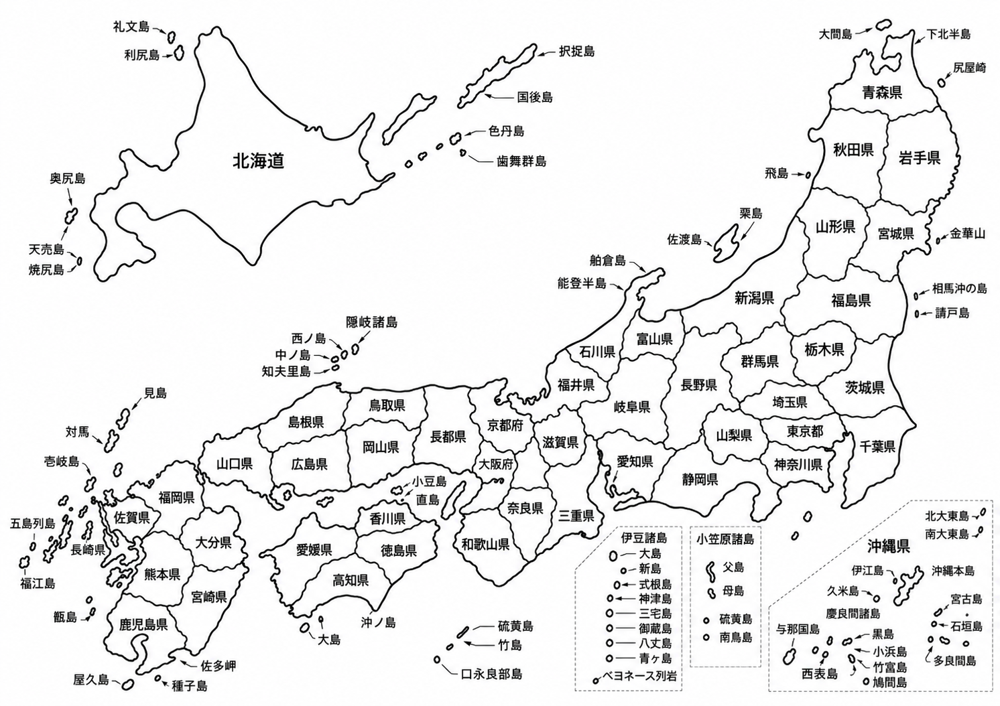

ふたりで訪れた日本地図
行った都道府県の名前をタップすると色が付きます。もう一度タップすると解除できます。
0 / 47 都道府県
0%

島の思い出
記録はこのiPhoneのブラウザ内に保存されます。同じ端末・同じブラウザで開けば続きから使えます。地図は横にスクロール・拡大できます。
行った都道府県の名前をタップすると色が付きます。もう一度タップすると解除できます。

記録はこのiPhoneのブラウザ内に保存されます。同じ端末・同じブラウザで開けば続きから使えます。地図は横にスクロール・拡大できます。